Warframe is a free-to-play online action game by Digital Extremes. It launched in 2013 to almost no attention, was written off by nearly everyone, and then quietly became one of the most played and most updated games in the world, more than a decade later. It's also the game I keep coming back to, which is why I built this page.
It is a third-person shooter, a melee slasher, a parkour playground and a deep RPG at the same time. You play solo or in squads of four, running missions across the entire solar system. It is playable on PC, PlayStation, Xbox, Switch and mobile, with cross-play and cross-save.
Centuries after the fall of the Orokin Empire, a golden civilization as brilliant as it was cruel, you wake from cryosleep on a dying ship. You are a Tenno: a warrior from the Old War, bound to a biomechanical exosuit of terrifying power called a Warframe.
The Origin System you wake into is carved up by factions that all want you dead, enslaved, or dissected. Your job: take it back, one mission at a time, and slowly uncover what you actually are. The story goes places you will not expect.
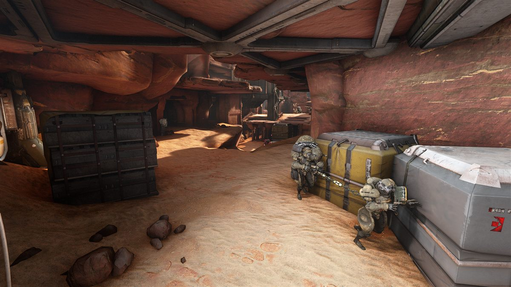
A rotting empire of mass-produced clones. Degenerate bodies, industrial armor, infinite numbers, permanent anger. What they lack in elegance they make up in artillery.
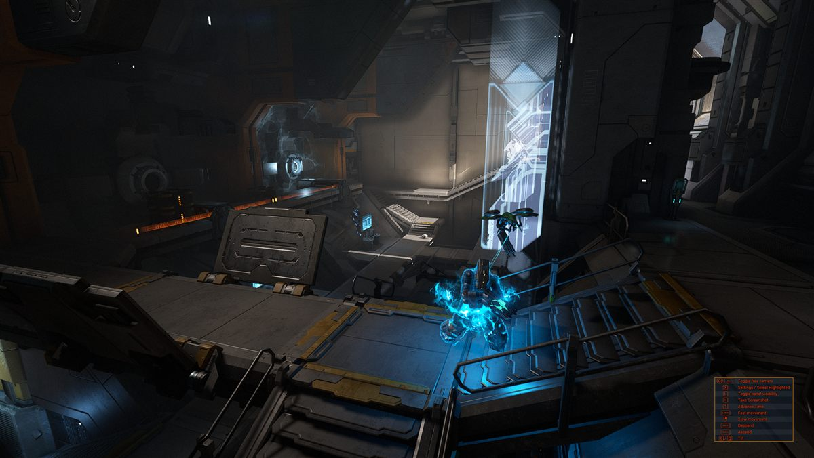
A merchant cult that worships profit and salvaged Orokin technology. They field shielded crewmen and walking robot proxies, and would happily sell you the gun that shoots you.
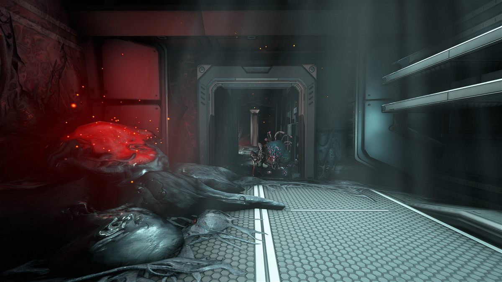
The Technocyte plague: flesh that remembers being people. It grows over ships, colonies and moons, and it screams while it spreads. Bring a flamethrower.
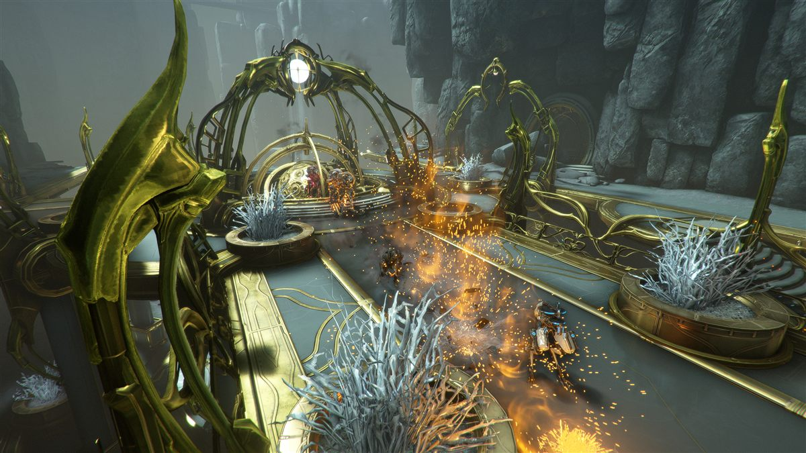
The extinct golden empire that built the Warframes, and everything else worth fighting over. Their towers are pristine, their morality was not. Mostly dead. Mostly.
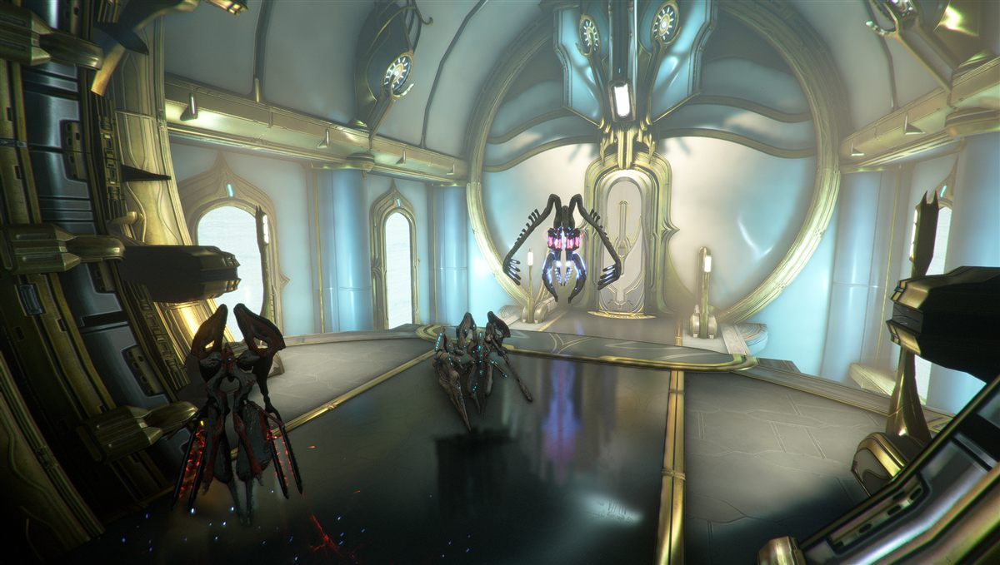
Self-repairing machines the Orokin sent to terraform another star system. They finished the job, came back, and brought a grudge that ended an empire.
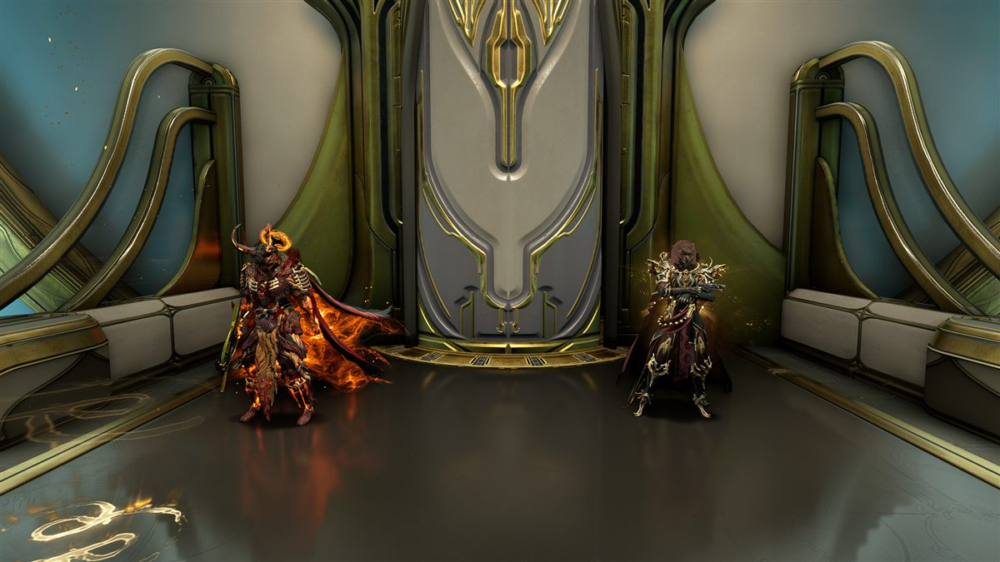
You. The blade the Orokin forged when nothing else could stop the Sentients, and the one weapon they never managed to control.
Warframe's movement system is the best in the genre and it isn't close: bullet-jumps, wall-runs, slides and aim-glides chain into a flow where touching the ground feels optional. Once it clicked for me, every other shooter felt like wading through mud.
Primary, secondary and melee: from sniper rifles and shotguns to throwing knives that come back and a whip made of fire. Every weapon levels up and is customized through mods, a card system with absurd build-crafting depth.
Each Warframe has four unique abilities and a distinct fantasy: stop time, summon shadow clones of dead enemies, become a walking gun turret, spread plague, or simply refuse to take damage. Collect them all; they're all earnable in-game.
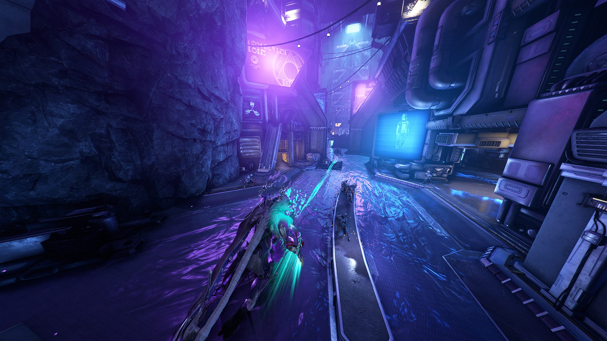
Every node on the star chart runs one of these. Some take five minutes, some hold you hostage for an hour because "one more wave" is a lie we all tell ourselves. The full board:
Kill everything between you and extraction. The purest mission there is.
Chase down a fleeing target, knock them over, scoop them up. The speedrunner's favourite.
Break a hostage out of a guarded cell and walk them home before the wardens trigger the execution.
Three data vaults full of lasers and cameras. Ghost through them, or fight the lockdown you caused.
A named boss, a proper arena, a Warframe blueprint at the end. The classic hunt.
Find the thing that keeps the enemy running, and un-run it. It comes in flavours:
Storm the Grineer fortress head-on: breach its defenses, gut its core, leave.
Steal a massive enemy vehicle and escort it out, feeding it your own shields to keep it rolling.
The gates between planets. A specter of a Warframe stands in your way; beat it to unlock the next world.
Waves of enemies, one objective. Hold it as long as your build (or your patience) lasts.
Defense for people in a hurry: carry the datamass, hack the console, hold, repeat.
Two crystals in two mirrored arenas, and the whole squad teleports between them.
Koumei's twist on Defense: protect the shrine while her dice decide how lucky you get.
Endless. Life support drops, enemies escalate, and greed always keeps you one capsule too long.
Four radio towers, four capture points. Hold more of them than the enemy does.
Power the diggers, guard the diggers, repeat. The dirt pays out in cryotic and relics.
Carry keys to four conduits while Demolishers sprint in to blow them up. Kill the runner or lose the round.
Escort squads of Grineer defectors to evac. They walk slowly. The Infested do not.
Keep the consoles clear of Infested sludge long enough to salvage a ship's manifest.
Simaris throws you through portal after portal of dense enemy zones. Pure XP, pure chaos.
Gladiator rules. Rathuum pits you against Grineer executioners; The Index against Corpus champions, with your own credits on the line.
Feed an Entrati crucible the right elements, then survive whatever the brew attracts.
Hunt a target deep in the Sanctum and hold a shrinking kill-zone. Weekly rewards worth the trouble.
Descend beneath the surface, past a Necramech that strongly objects, into sealed Orokin vaults.
Vox Solaris' multi-stage operation, ending face to face with a building-sized Orb spider.
Ride a colossal elevator up through a Corpus tower, defending it the whole climb.
The job board of the Plains, the Vallis and the Drift: chained objectives across the landscape, stacked rewards.
A space chase: run down a fleeing Grineer ship and shoot out its engines.
Full burn through a gauntlet of fire. Get to the end fast, or not at all.
The standard Railjack battle: fighters, crewships and a side objective, all in open space.
A ship's reactor is melting down. Regulate the vents from inside while your Railjack keeps the outside busy.
Sentient machines that shut Warframes down on sight. Bring your Necramech.
The fastest mission in the game: cleanse hijacked Exolizers before the cascade snowballs out of control.
Seal ruptures in reality by collecting vitoplast. The Void does not enjoy being sealed.
Tower defense, Zariman style: build turrets, hold the Exodampers, and meet what the Void sends back.
I'll write this one up properly soon.
I'll write this one up properly soon.
I'll write this one up properly soon.
The game opens by offering you one of three. There is no wrong answer, I promise. You can earn the other two (and every other frame) later.
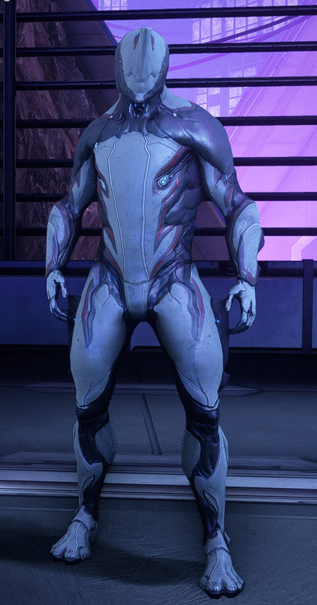
The swordsman. Balanced, aggressive, honest. Turns into a lightsaber blender when things get personal. The classic pick.
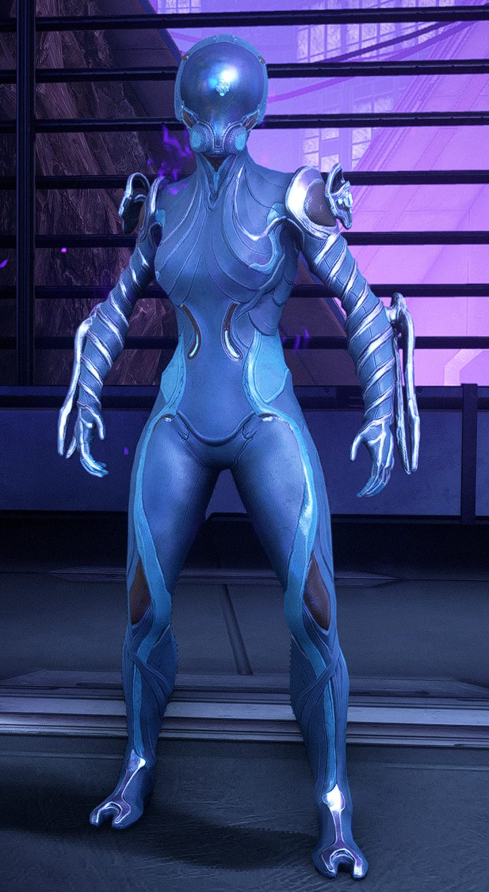
The magnetist. Crushes armor, yanks enemies into the air, turns bullets into area damage. Highest skill ceiling of the three.
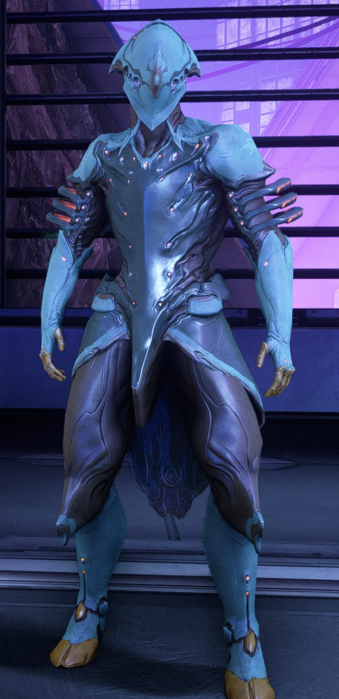
The storm. Casts lightning, shields the whole squad, and runs faster than the mission timer. Speed is a form of damage.
Digital Extremes bets the studio on a weird space-ninja game nobody wanted to publish.
The quest that transformed Warframe's reputation forever. The less you know going in, the better. I won't spoil it; this one is sacred.
Doubles down on the revelations and hands you powers you didn't know the game was hiding.
The corridors open into a full landscape, with hundred-meter Eidolon giants that walk the plains at night.
The story of Umbra, plus a neon debt-colony on Venus with hoverboards.
The Sentient invasion finally arrives. The entire system burns, and you play every side of it.
A new chapter begins beneath Deimos: grim, funny, and setting up everything that comes next.
The Stalker, your oldest enemy, gets the most human story the game has ever told. Short, heavy, unforgettable.
A rogue time-travel arc to a 1999 that never happened: proto-frames, a boy band of villains, and a mall-goth apocalypse. Yes, really.
The saga reaches back to the Old War itself: the oldest wounds in the Origin System, finally reopened.
The newest chapter: Jade's story continues, and the Origin System keeps growing thirteen years in.
Earth. Grass, Grineer camps, and colossal spectral giants after dark.
Venus, terraformed into coolant snowfields. Corpus country. Bring a hoverboard.
A moon that is one single living organism. The ground has opinions.
A storybook realm trapped in a time loop, ruled by a bored, murderous king.
Eventually you stop borrowing ships and build your own. The Railjack is a fully crewed interceptor you customize, upgrade and fly through open space: dogfighting Grineer galleons, boarding enemy crewships mid-battle, and walking back out of their airlock when you're done.
One player flies, the others man turrets, forge munitions, patch hull breaches or launch out the side in their Archwing. Bring friends, or hire an NPC crew and run it solo like a one-Tenno pirate operation. Ship combat and on-foot combat blend seamlessly, with no loading screen between the two.
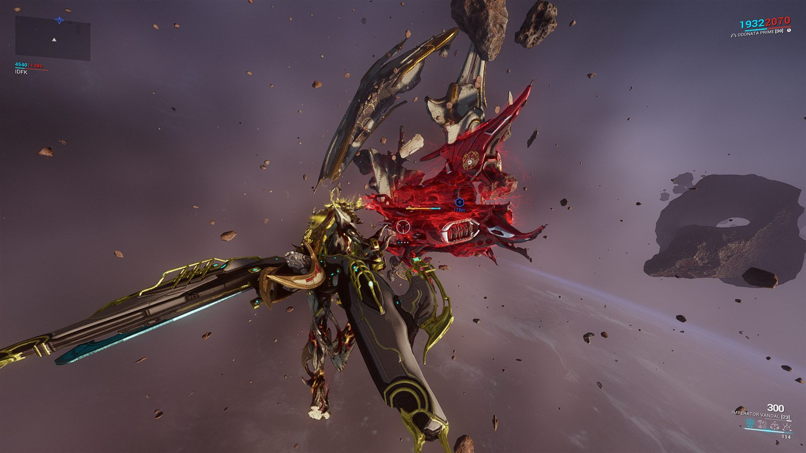
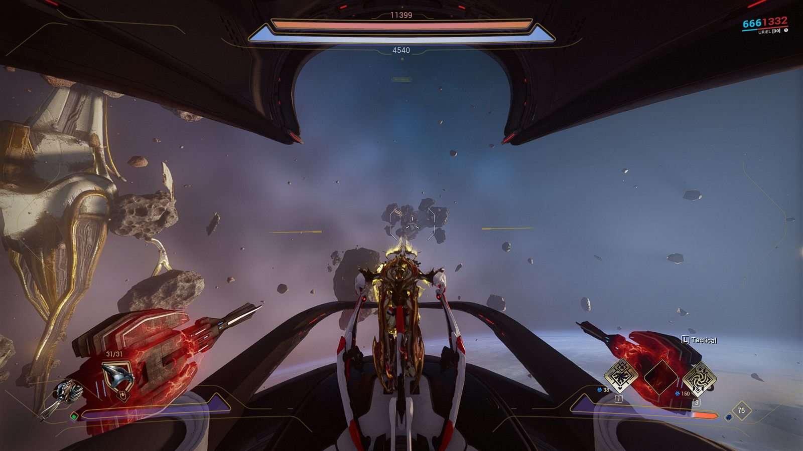
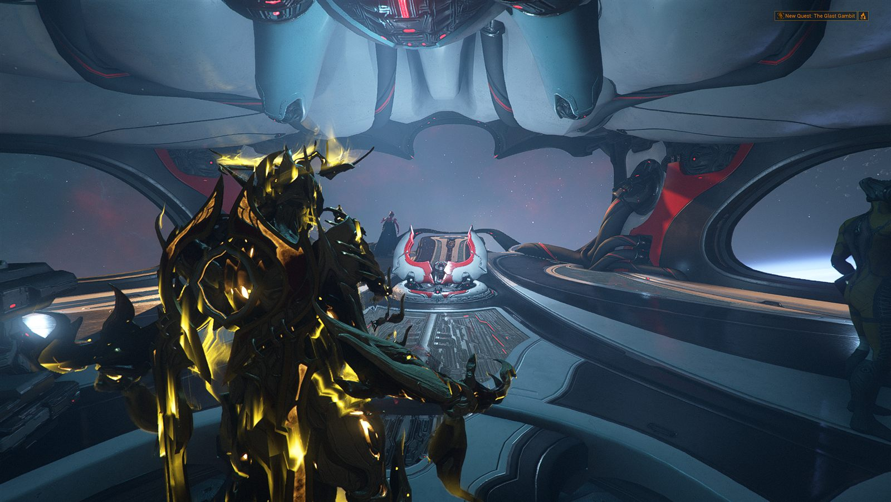
Every Warframe and every weapon that affects gameplay can be earned by playing. The premium currency, platinum, is tradeable between players, and plenty of us fund our entire accounts by selling spare parts to other Tenno. Money buys convenience and fashion. And in Warframe, fashion is the true endgame. Exhibit A:
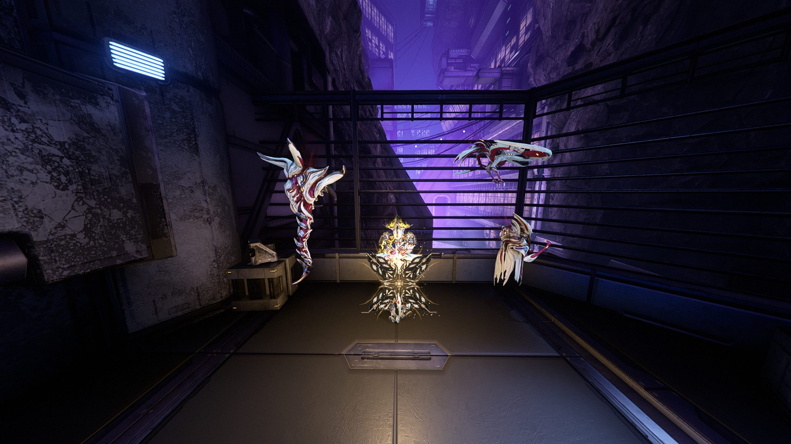